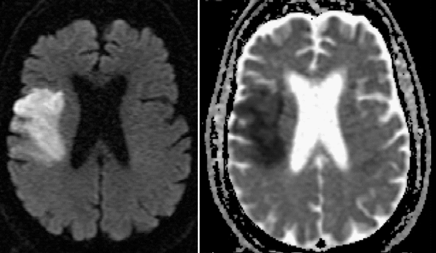

010 — Giải phẫu ngực cắt lớp (Cross-sectional anatomy)
010 — Giải phẫu ngực cắt lớp (Cross-sectional anatomy)anatomy:nguc
Biến thể bình thường (normal variant) + cạm bẫy (pitfall).
Bài học · Nguồn 020 — Nốt phổi (Pulmonary nodule)
020 — Nốt phổi (Pulmonary nodule)pattern:not score:Lung-RADS protocol:Fleischner
Gamut nốt + Fleischner / Lung-RADS.
Bài học · Nguồn 025 — Hang & nấm phổi (Cavity & aspergilloma)
025 — Hang & nấm phổi (Cavity & aspergilloma)pattern:hang vung:phoi
Thành ≤4mm/>15mm + liềm khí Monod.
Bài học · Nguồn 030 — Đông đặc – xẹp phổi (Consolidation – atelectasis)
030 — Đông đặc – xẹp phổi (Consolidation – atelectasis)pattern:dong-dac vung:phoi
Phân biệt đông đặc (consolidation) vs xẹp (atelectasis).
Bài học · Nguồn 031 — Viêm phổi mẫu hình (Pneumonia patterns)
031 — Viêm phổi mẫu hình (Pneumonia patterns)pattern:dong-dac vung:phoi
Thùy vs đa ổ vs hang lao.
Bài học · Nguồn 033 — Phù phổi & ARDS (Edema & ARDS)
033 — Phù phổi & ARDS (Edema & ARDS)pattern:mo-ke vung:phoi
Kerley B + tim to vs ARDS.
Bài học · Nguồn 035 — Xơ mô kẽ UIP vs NSIP (Fibrosing ILD)
035 — Xơ mô kẽ UIP vs NSIP (Fibrosing ILD)pattern:mo-ke protocol:HRCT
Tổ ong đáy vs chừa màng phổi.
Bài học · Nguồn 040 — Tràn dịch màng phổi (Pleural effusion)
040 — Tràn dịch màng phổi (Pleural effusion)pattern:tran-dich vung:mang-phoi
Dịch tự do (free fluid) vs khu trú (loculated).
Bài học · Nguồn 041 — Tràn khí màng phổi (Pneumothorax)
041 — Tràn khí màng phổi (Pneumothorax)pattern:tran-khi vung:mang-phoi
Đường màng phổi + deep sulcus phim nằm.
Bài học · Nguồn 050 — Giãn PQ & kén khí (Airways & cysts)
050 — Giãn PQ & kén khí (Airways & cysts)pattern:gian-phe-quan pattern:ken-khi
Nhẫn ngọc >1,0 + kén ≤2mm.
Bài học · Nguồn 060 — Khối trung thất ITMIG (Mediastinal)
060 — Khối trung thất ITMIG (Mediastinal)pattern:khoi score:ITMIG
3 khoang + chemical-shift SII.
Bài học · Nguồn 070 — PE & ĐMC cấp (Vascular emergency)
070 — PE & ĐMC cấp (Vascular emergency)pattern:khuyet-thuoc protocol:CTA-nguc
Góc nhọn/tù + flap + IMH 50-70HU.
Bài học · Nguồn


 061 — Tràn khí trung thất (Pneumomediastinum)
061 — Tràn khí trung thất (Pneumomediastinum)pattern:khi-trung-that
Macklin + thủng thực quản.
Bài học · Nguồn



211 — Đột quỵ não (Stroke)pattern:nhoi-mau score:ASPECTS
DWI+/ADC− + 4,5h/24h.
Bài học · Nguồn